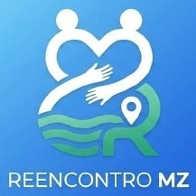

Em Moçambique, a falta de um sistema centralizado agrava o sofrimento durante crises climáticas e deslocamentos.
Quando alguém desaparece, as famílias recorrem às redes sociais.
A boa intenção gera pânico e desinformação.
Substituir o caos por esperança estruturada e tecnológica.
OBRIGADO